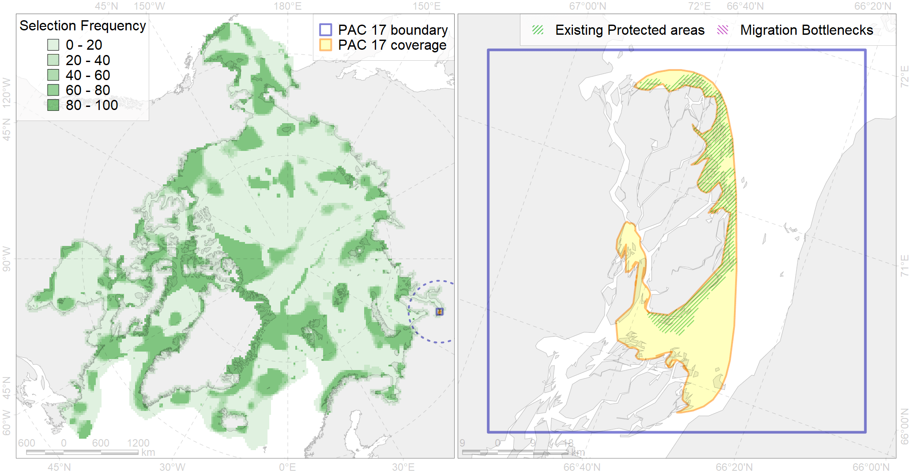

Region 17
Region 17
“ArcNet” scenario 33 achievement for region 17.
Use Accenter for advanced mode.

0
CFs inside of Region completely
0
CFs inside of Region at quarter
0
Complete-targets achievement by Region
1
Half-targets achievement by Region
| CF | Name | Target Achievement for Region | Proportion of Target Achievement in Region | Amount Proportion in Region |
|---|---|---|---|---|
| 8021 | Kara Sea estuaries | 55.0% | 48.7% | 18.1% |
| 4093 | Estuarian (Ob’-Enissey) brackish–water fish complex | 11.5% | 1.9% | 0.8% |
| 3011 | Fast ice distribution in the Western part of the Kara Sea | 11.5% | 1.8% | 0.8% |
| 7112 | II.1.1.6. Ob-Yenissean estuarine region | 6.0% | 1.5% | 0.7% |
| 4061 | Feeding/nursery area of the Siberian sturgeon (Acipenser baerii) (F4) | 0.9% | 0.9% | 0.4% |
| 2049 | Ringed seal whelping areas in the Kara Sea | 1.3% | 0.7% | 0.4% |
| 4043 | Range of Nawaga (Eleginus nawaga) (F37) | 1.8% | 0.5% | 0.2% |
| 4015 | Feeding area of the Broad whitefish (Coregonus nasus), American populations (F 19) | 0.7% | 0.6% | 0.2% |
| 4010 | Feeding area of the Muksun (Coregonus muksun) (F 15) | 0.5% | 0.5% | 0.2% |
| 4014 | Feeding area of the Siberian whitefish (Coregonus pidschian) (F 18) | 0.7% | 0.4% | 0.2% |
| 4018 | Feeding area of the Vendace, Least cisco (Coregonus sardinellа), Euro-Asian populations (F 20) | 0.6% | 0.3% | 0.2% |
| 4021 | Feeding area of the Inconnu (Stenodus leucichthys nelma), Euro-Asian populations (F 22) | 0.4% | 0.4% | 0.2% |
| 4008 | Feeding / nursery area of the Arctic Cisco (Coregonus autumnalis), Eurasian populations (F 14) | 0.3% | 0.3% | 0.1% |
| 4052 | Range of the Fourhorn Sculpin (Myoxocephalus quadricornis) (F 45), American populations | 3.6% | 0.3% | 0.1% |
| 4030 | Feeding area of the Arctic charr (Salvelinus alpinus), anadromous populations (F28) | 0.3% | 0.2% | 0.1% |
| 3038 | Marginal Ice Zone distribution in July in the Kara Sea LME | 0.5% | 0.4% | 0.1% |
| 5007 | Beluga of the Barents-Kara-Laptev Sea stock general distribution | 0.3% | 0.2% | 0.1% |
| 4006 | Feeding/nursery area of the Pacific rainbow smelt (Osmerus dentex) (F12) | 0.4% | 0.1% | 0.1% |
| 8033 | Salt marshes of the Kara Sea LME | 0.1% | 0.1% | 0.0% |
| 4041 | Range of the Polar Cod (Boreogadus saida) (F35) | 0.0% | 0.0% | 0.0% |
| 5112 | Arctic Cetaceans (beluga, bowhead, narwhal) winter habitats as predicterd by MIZ | 0.0% | 0.0% | 0.0% |